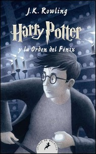
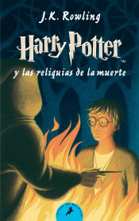

En la piedra filosofal descubrimos quien es Harry potter y la magia, tambien vemos al villano de la saga a demas de saber que es la piedra filosofal, harry emprendera un vieje por el mundo magico
en este libro harry y sus amigos van a conocer un lugar secreto del castillo de magia, para poder salvar a su amiga del malo
en este libro harry y sus amigos tenbdran que portir en la busqueda de otras pistas para poder salvar de sus amigos, el tiempo estara a su favor en esta serie
El caliz de fuego es un libro muy bueno ya que en este libro nuestros amigos pueden saber mas de su crecimiento porsonal y poder enfrentar mejor a los que acechan en su vida
en el libro de la orden del feliz hrry tiene un gran perdida que lo dejara aun mas marcado, y no solo qeso aprender a osiar y si ya era ariesgado pued lo sera aun mas
en este libro harry va a descubrir quien es el principe de las pociones y una muerte inminente llegara

el ultimo libro y aventura de los chicos en el mundo magico no llegara a su fi pero tendran una vida m,ejor o peor
